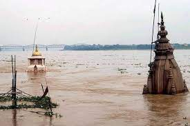

Northern Regions

Affected regions:
Punjab, Haryana, Uttar Pradesh, Bihar
Recent disaster
Name : Varanasi Flood
Date : Aug 30, 2022
Water level : In Varanasi, the water level of the Ganga crossed the warning mark of 70.262 metres at 8 am
Friday (August 26) and stood at 70.86 metres, only 0.40 meters below the danger mark of 71.262 metres. After the
rise in the water level in the Ganga, the reverse flow has erupted a similar situation in the Varuna river as
its water has begun plunging into residential vicinities situated on its banks.
Response : The flood-affected people are being locomoted to relief camps. The official added that
drinking water, food, and medical facilities are being provided to the displaced people in these camps. All
necessary arrangements have been made to provide food and other necessities, the SDM said, adding that the teams
of the district administration are continuously patrolling the affected areas to assist the trapped
people.
Damage : The district administration, in a statement, said that 18 municipal wards and more than 80
villages have been affected by the floods in Ganga and its tributary Varuna in the district and 228.69 hectares
of crops have been damaged in the district.